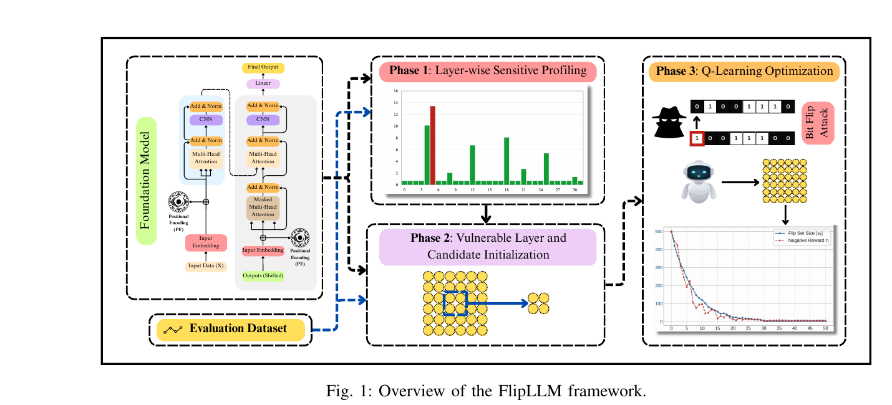
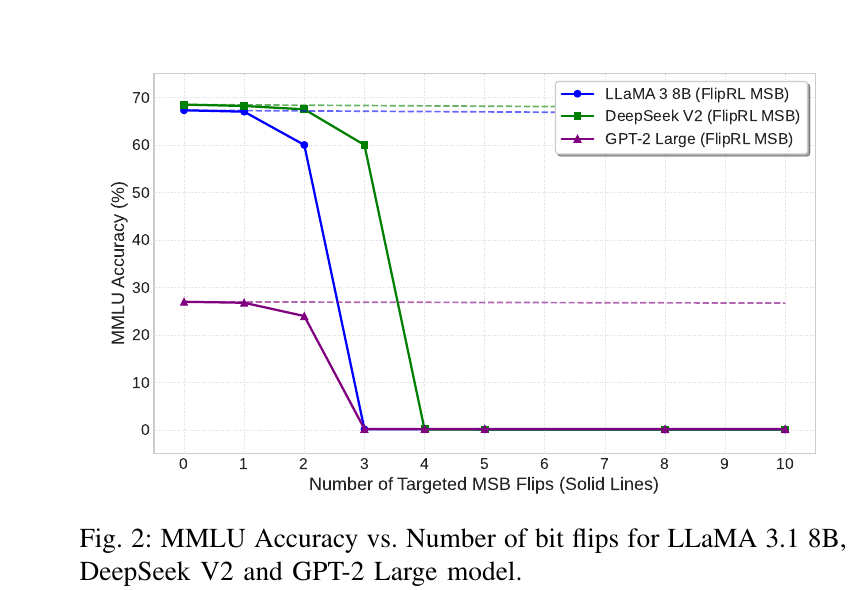
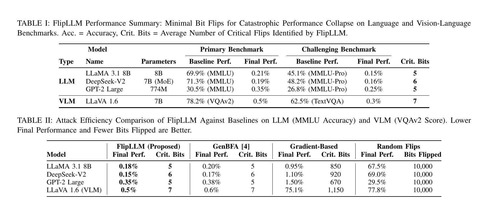
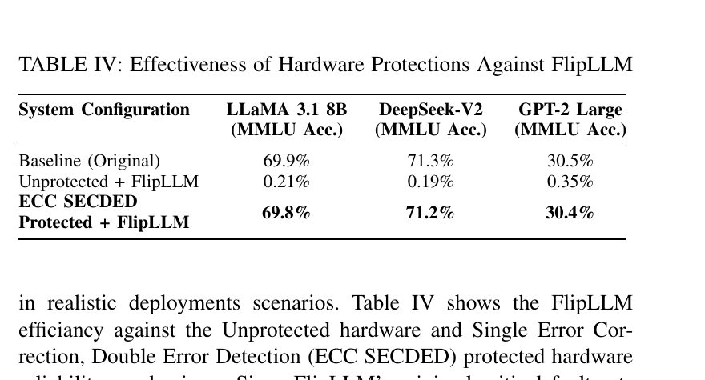

A bit flip is almost absurdly small. One stored zero becomes a one, or one becomes zero. Against a model with billions of parameters, that sounds closer to noise than an attack. In our FlipLLM experiments, it was neither. A small set of well-chosen flips pushed the performance of language and vision-language models from normal operation to near-zero accuracy.
FlipLLM grew out of my doctoral research under the supervision of Professor Khaza Anuarul Hoque. Together, we study a question that often gets buried under the dramatic result. If a fault mechanism already exists, which bits should a hardware-security evaluation actually care about? Random testing is a poor answer when the space contains billions of candidate parameters and many possible bit positions. The hard part is finding the sparse combinations that matter.
The striking number is five or seven flips. The deeper finding is that vulnerability is highly concentrated, structurally patterned, and discoverable.
The search problem is the security problem
Bit-flip attacks sit at the boundary between model behavior and physical memory. Techniques such as Rowhammer show that memory faults are plausible under realistic hardware threat models. Yet a fault mechanism alone does not tell an attacker which address will damage a particular model. Most flips are harmless. Some touch parameters with little influence. A very small number can trigger a sharp failure.
Brute force is out of the question. For a billion-parameter model, even testing one bit per weight is already enormous. Searching combinations of several bits makes the problem combinatorial. Random injection has value for broad reliability statistics, but it is exceptionally unlikely to find the worst case. Static ranking methods miss interactions between parameters, while population-based search becomes expensive as models grow.
FlipLLM treats the hunt for critical bits as sequential decision making. That framing matters because each candidate flip changes what should be tried next. The search learns from its own failures rather than repeatedly starting from scratch.

How FlipLLM narrows billions of possibilities
The first phase profiles layers by combining two signals. Weight magnitude gives a static view of parameters that may have large numerical influence. Gradient information gives a dynamic view tied to model behavior on evaluation data. Neither signal is sufficient by itself. Together, they identify layers where perturbation is more likely to matter.
The second phase keeps a small candidate subset from the most sensitive layer. This pruning step is what makes the later search practical. Instead of asking a reinforcement-learning agent to wander through the whole model, FlipLLM places it in a region with a much higher concentration of useful candidates.
The third phase runs Q-learning over that reduced space. Its actions add, remove, or shift candidate flips. The reward balances two competing goals. It favors a large performance drop while penalizing bloated fault sets. That second term is crucial. Without it, finding a damaging set would be easier, but the result would say much less about the model's true worst-case sensitivity.
The failure is a cliff rather than a slope
We evaluated GPT-2 Large, LLaMA 3.1 8B, DeepSeek-V2 7B, and the LLaVA 1.6 vision-language model. The benchmarks covered MMLU, MMLU-Pro, VQAv2, and TextVQA. Across these models, performance remained fairly stable through the first few targeted flips and then collapsed abruptly.

LLaMA 3.1 8B fell from 69.9 percent to 0.21 percent on MMLU with an average of five critical flips. DeepSeek-V2 fell from 71.3 percent to 0.19 percent with six. GPT-2 Large fell from 30.5 percent to 0.35 percent with five.
The multimodal result was equally severe. Seven flips reduced LLaVA 1.6 from 78.2 percent to 0.5 percent on VQAv2 and from 62.5 percent to 0.3 percent on TextVQA. That matters because the model is doing more than next-token prediction over text. Its vision encoder, projection path, language backbone, and multimodal alignment all participate in the final answer. The attack did not require corrupting every part of that stack. A sparse fault set was enough to break the system-level behavior.

Why random fault injection misses the point
The random baseline flipped 10,000 bits and still left most model performance intact. The gradient baseline needed hundreds of flips for much weaker degradation. FlipLLM reached near-zero performance with single-digit fault counts. This gap says something practical about validation. A large fault campaign can look comprehensive while entirely missing the worst case.
Runtime matters for the same reason. FlipLLM completed the LLaMA search in 18 hours compared with 43 hours for GenBFA. The corresponding times were 26 versus 42 hours for DeepSeek-V2, 4 versus 10 for GPT-2 Large, and 22 versus 48 for LLaVA. The largest speedup was 2.5 times, with an average of roughly 1.9 times across the evaluated models.
I do not read those numbers as a race between search algorithms. Their value is methodological. Hardware-security testing needs a search loop that remains feasible when the target shifts from a conventional network to a large language model, a mixture-of-experts model, or a multimodal architecture.
The defensive result matters more than the attack headline
Once FlipLLM identifies a small critical set, protection no longer needs to be uniform across every stored parameter. We tested standard single-error correction and double-error detection at the identified locations. The protected LLaMA model retained 69.8 percent accuracy against a 69.9 percent baseline. DeepSeek-V2 retained 71.2 percent against 71.3 percent, and GPT-2 Large retained 30.4 percent against 30.5 percent.

This changes the engineering conversation. Full protection is expensive in memory, energy, and implementation complexity. If vulnerability repeatedly localizes around attention projections and normalization parameters, designers can prioritize those regions. The paper found critical bits concentrated in query, key, value, and output projection matrices, with normalization parameters also appearing frequently. Feed-forward weights were selected far less often.
That pattern gives hardware teams something concrete to test. It supports selective ECC, parity, redundancy, fault-aware memory placement, and pre-silicon campaigns built around model-specific worst cases. The attack analysis becomes a map for spending a limited protection budget.
What the result does not claim
FlipLLM is a targeting engine, not a new physical fault mechanism. The threat model assumes an adversary who can already induce memory faults through a technique such as Rowhammer or another fault-injection path. The framework then identifies where those faults would have the greatest impact. It does not establish a remote compromise path, and it does not address prompt jailbreaking or unsafe content generation.
The experiments study catastrophic functional collapse. Other objectives deserve separate treatment. A stealthy attacker may prefer a targeted class failure, a selective multimodal error, or a subtle behavior change that survives routine monitoring. Those objectives would require different rewards and different evaluation protocols.
There is also a gap between model-level simulation and a complete hardware exploit. Physical address mapping, memory layout, quantization, runtime scheduling, and platform defenses all affect feasibility. That gap should remain explicit. A useful hardware-security result needs to clarify which layer it solves and which assumptions it inherits.
What I take away from the work
The smallest fault is not automatically the weakest fault. In large models, damage depends on where a bit sits, how its weight participates in computation, and how several faults interact. Scale makes naive search harder, yet it also creates structure that a guided method can exploit.
The practical lesson is straightforward. Evaluating ten thousand arbitrary faults is not a substitute for searching for five consequential ones. Once those five are known, the same analysis that exposes the weakness can guide a focused defense.
Read the published paper · Open the arXiv version · More AI hardware security research